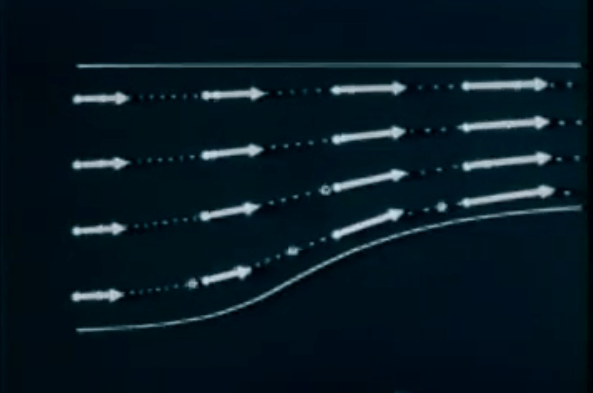
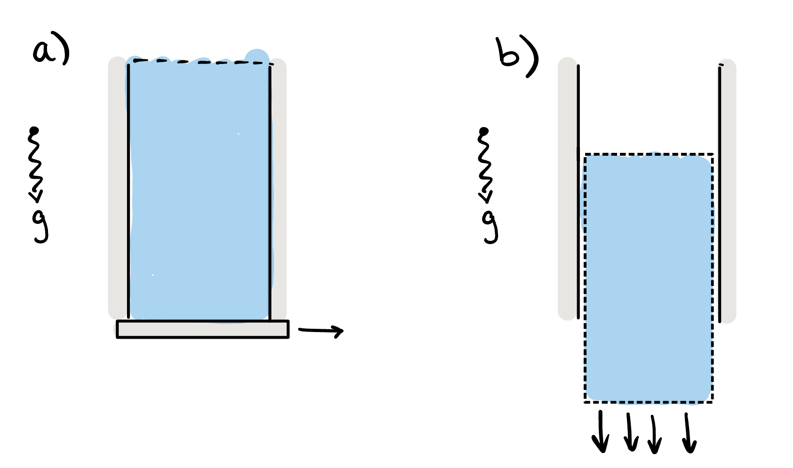
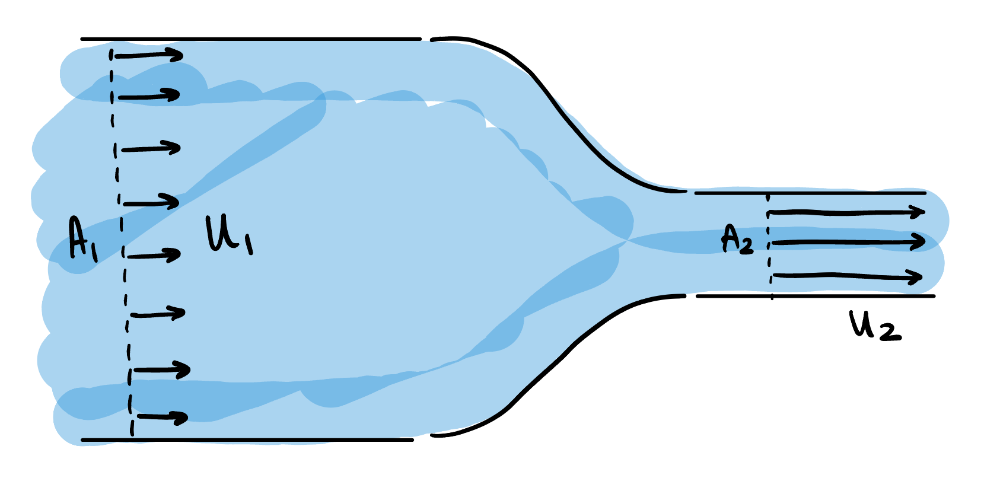

Chapter 2 Kinematics
Fluid kinematics refers to the study of fluid motions without considering the associated forces (or energies) that cause such a fluid to move. In a nutshell, it relates to studying e.g. the general velocity and acceleration fields of a fluid, visualising the fluid trajectories, and so forth.

There are some unintuitive challenges when it comes to defining even the most basic quantities in fluid dynamics. Consider the following two thought experiments.
In the first experiment, we consider a tube filled with water, where the bottom is released at time \(t = 0\text{.}\) One can imagine that the entire column of fluid will fall under the effect of gravity.

Each particle within the fluid is accelerated downwards at a constant rate (gravity). Therefore the velocity of the fluid is given by \(\bu = (0, 0, -U(t)).\) In this case, we imagine that acceleration can be defined simply as the partial derivative, in time, of the velocity field, or
\begin{equation*}
\ba
= \pd{\bu}{t} = (0, 0, -\dot{U}(t)) = (0, 0, -g),
\end{equation*}
where we have used the over-dot notation for a derivative in time.
However, consider now the second thought experiment of fluid being pumped through the vessel shown in the figure below. The fluid has reached a steady-state (so the streamlines of the flow, if you can imagine them, are constant and travelling from left-to-right).

Upstream of the bottleneck, the volume flowrate is equal to the velocity times area, or
\begin{equation*}
\textrm{Upstream flow rate (area times velocity)} = A_1 U_1.
\end{equation*}
This is the amount of fluid that is flowing through a cross section of the pipe upstream. Similarly, we have
\begin{equation*}
\textrm{Downstream flow rate (area times velocity)} = A_2 U_2.
\end{equation*}
However, since mass must be conserved, that fact that there is a smaller cross-sectional area downstream must mean that the velocity is higher downstream. Therefore, \(U_2 > U_1\text{,}\) and to achieve this, the fluid must therefore have been accelerated somewhere within the channel.
However, a thought to the situation might convince you that the velocity field in the channel is time-independent: it only changes as a function of its position and is therefore of the form \(\bu = \bu(\bx)\text{.}\) Indeed, at every fixed point in the channel, the velocity at that point is not changing in time. Therefore, if we use our previous definition that \(\ba
= \dot{\bu}\) we see that the acceleration would be zero everywhere!
The crux of the issue, and the difference between the two thought experiments, is that velocity is both a function of space and time, i.e. \(\bu = \bu(\bx, t)\text{.}\) The change in velocity (acceleration) can therefore derive from changes in \(\bu\) at fixed space and variable time; but also due to changes in \(\bu\) at fixed time and variable space. Disentangling this leads us to define the nature of Eulerian and Lagrangian coordinates, presented next.